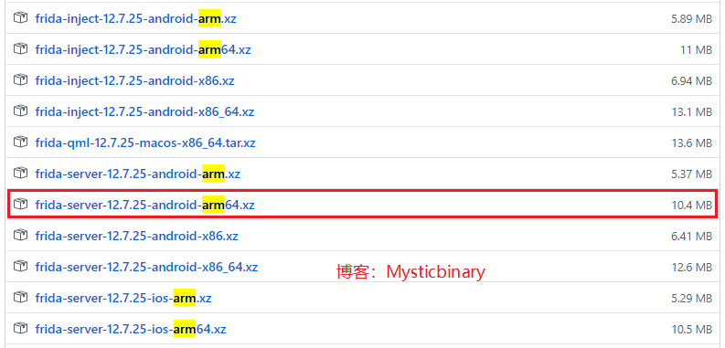

原文连接:https://www.cnblogs.com/mysticbinary/p/12012935.html
Frida是什么
我觉得官网已经说得很清楚了。简单的说就是一款动态代码检测工具，可用于各种主流操作系统，这里主要讨论的是动态检测Android系统里面代码运行情况。
Android版的Frida环境的搭建主要分为两个部分，一部分是运行在Android机器上的代理工具 frida - server，另一部分是Windows系统用Python PIP安装了发指令的工具 frida - CLI，下面 frida-server我简称为Android端、frida CLI我简称为Windows端。把这两端的环境都部署好后，就能通过Windows向Android发送指令了。
分类如下：
- frida - server （相当于Android系统里面安装了一个代理工具）
- frida - CLI （指在Windows系统用Python PIP安装了发指令的工具）
frida - CLI的其它替代方案：
我这里使用Window系统的Python语言，同理你可以切换成Linux、Mac OS等其他操作系统，只要能安装Python环境即可。
Android端安装步骤
根据CPU架构选择frida-server
Android手机主要是安装一个 frida-server，安装前，但是需要根据不同的CPU架构去选择 frida-server，其实也可以从宏观的层面上看出Frida的核心功能就是监管CPU、内存的操作，现在Android主流的CPU架构分类为 x86 和 arm 架构的，那么怎么区分自己Android手机的CPU架构呢？ 跟着我敲一行命令即可：
adb shell getprop ro.product.cpu.abi 
CPU架构和位数：
armeabi-v7a -------（32位ARM设备）
arm64-v8a -------（64位ARM设备）
下载地址：https://github.com/frida/frida/releases
地址里面比较多产品，因为Frida比较牛逼，支持的平台众多，你就搜索frida-server-XXX.XXX.XXX-android-x86_64.xz就好。

我这个是 arm64 架构的，下载好了之后解压，adb push ~ ~到Android手机就行了。
Android安装frida-server
adb push frida-server /data/local/tmp # adb push 参数1 参数2
adb shell
su
cd data/local/tmp
chmod 777 frida-server
ls -all # 验证是否777
-rwxrwxrwx shell shell 21248332 2019-01-03 17:29 frida-server-12.2.27-android-arm
./frida-server # 必须运行 机器需要root权限，因为Frida要求的权限比较大。注意尽量使用真机测试，因为一些虚拟机CPU使用混合模式架构，这样就会导致Frida报错无法运行，新手尽量使用真机来避免这个问题，如果实在没有这个条件，那么挑选虚拟机的时候尽量注意一下这个问题即可。
如果程序一直处于运行状态（如下图），不返回shell就是正常的。
Windows端安装步骤
Python PIP安装组件
pip install frida
pip install frida-tools pip list # 验证一下pip是否安装成功Windows端验证 frida-server 是否成功
# 设置端口转发
adb forward tcp:27042 tcp:27042
adb forward tcp:27043 tcp:27043
# 查看进程
frida-ps -R
# 或
frida-ps -U
能看到打印出来的PID和进程，说明Android、Windows端都已经安装好了。去探索吧，少年！